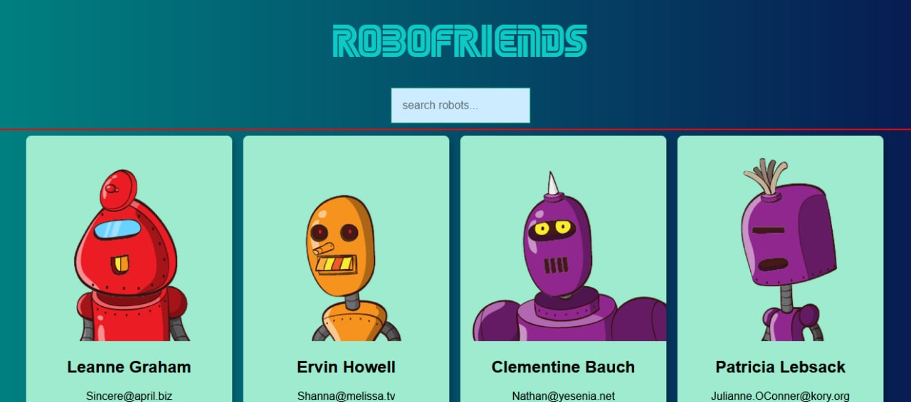
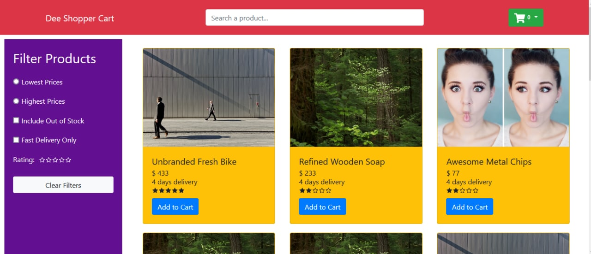
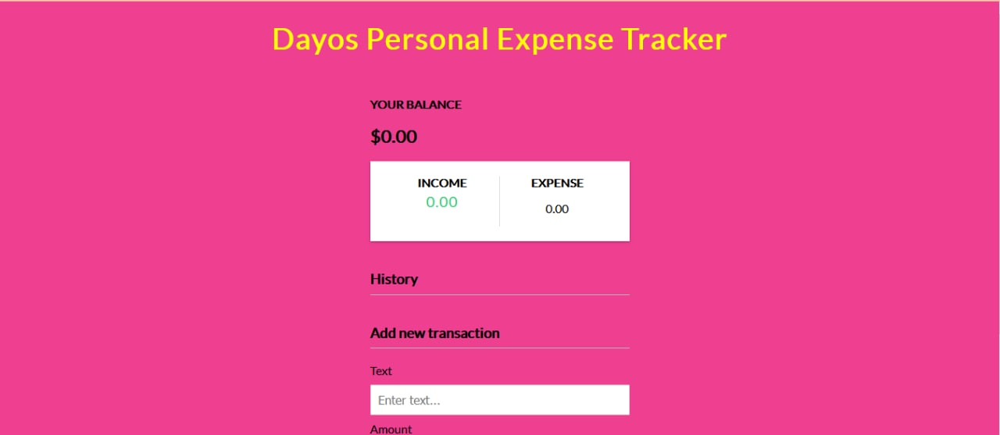

Oludayo Adeoye 💰
🚀 Welcome to my website!
I like making stuff and putting it on the internet
📜 Manifesto
I enjoy writing codes,teaching programming, solving problems, tasted automation in Python and never looked back
With 3 years experience developing in SQL,HTML Java, Python,JavaScript, and other Object Oriented languages Working knowledge of SaaS application development – Java,PHP, Restful, JSON, Maven, GIT, JIRA, Eclipse,Intellij, Power Bi, Azure Data studio, I have working knowledge of Linux,bash scripting, Ansible, MACOS and Windows operating systems. I am familiar with dockers,containers and volume images. I have created projects with react,PHP,Java and I am very comfortable with the JavaScript Language, I am fascinated with data analysis, cyber security systems and have working knowledge of app testing and automation.
I also built a solid operational process with my team, driving operational excellence while maintaining sufficient controls, assessing and mitigating operational risks while operating as a Manager of Fixpro enterprise that generally increased their administrative operational efficiency while driving operational cost low by 20 %.
👩🏽🚀 Projects
Designed



With my concept of React. This is my github profile
🔻 🔻 🔻 🔻 🔻 🔻 🔻
github profile:
I am proficient with ui/ux platform like figma and Axure Rp
designed a Zoo app for mobile phones
Zoo App
🏆 Accomplishments
I with a committed team solved more than 4000 customer payment -related complaints while I worked as a business analyst for Marichris limited in addition to providing the management visually pleasing data work for their decision making which led to growth and the creation of an extra branch opening in just three months of operating.
When you give your best you benefit the world by making your lifestyle count
-Dbillion 📚
🌮 Work History
Freelance
Webdesigner, Java programmingUser Experience Designer, Webdesigner, Java programming Freelance
Personalized ui/ux designs optimally for apps Built and designed websites for learning and development purposes Solved many customers complains and through strategic listening understood clients wants and effected their desires with many returning clients. Designed
Starship Technologies
Robot Operator
Overseeing the robots during their autonomous operations via computer stations Remotely operating/guiding the robot in a safe and sensible manner in certain traffic situations Communicating with the remote operators and on the ground field assistants in real-time Controlling robot while establishing new mapping paths Logging and reporting any issues to relevant teams
Swappie
Production Specialist
Fulfil and prepare an order for shipment, pack and install accessories. Worked with an impressive team that achieved top results Grew my teamwork, leadership and communication skills as an individual through the series of task given
MARICHRIS LIMITED
Business Analyst
consultant for its operations, marketing and implementation of its social media strategy with many returning customer and effective profit leap. Performed many data analysis in Python, Azure Data Studio and and Microsoft Power Bi to generate powerful and and winning visual data results that helped the management to make better and more expert choice
Thanks for Reading!